Click here to see live flight data and airplane pictures.

The plane spotter is a Python program that uses a software defined radio (SDR) to capture overhead flight data, and a type of AI called the Convolutional Neural Network (CNN) to capture the airplane picture. The data and pictures are stored on a Google Cloud Storage S3 bucket as an html document for viewing.
Click here to see the Python code.
Some examples
2025-05-21 17:28:03
Aircraft: a2ed83 | Type: MD-11 F | Flight: UPS2752 | Altitude: 2400 feet | Speed: 174 knots | Vertical Speed: -1024 feet/min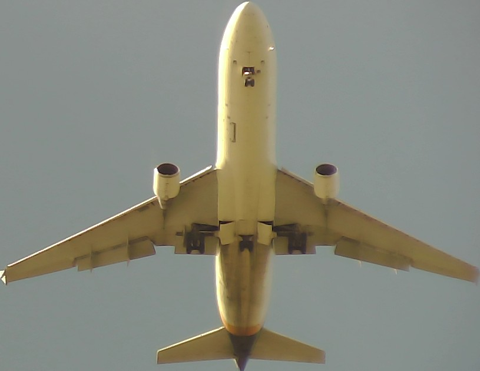
2025-05-30 11:40:45
Aircraft: ab5257 | Type: 787 9 | Flight: AAL963 | Altitude: 2350 feet | Speed: 233 knots | Vertical Speed: 1664 feet/min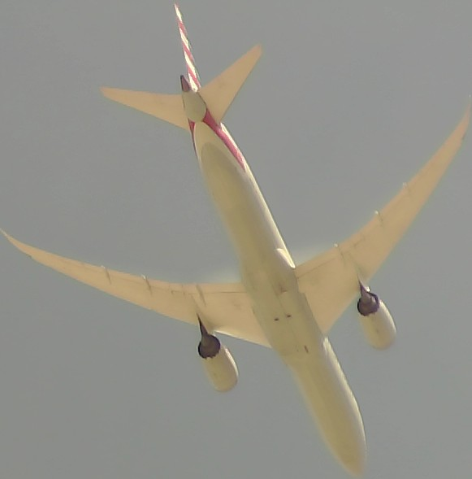
2025-05-30 16:23:14
Aircraft: 3c64ee | Type: A340 313X | Flight: DLH439 | Altitude: 1775 feet | Speed: 187 knots | Vertical Speed: 448 feet/min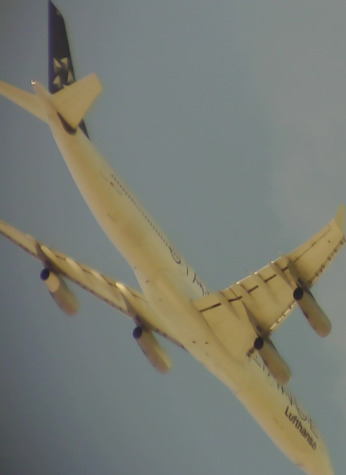
2025-06-01 13:28:30
Aircraft: a3ed7c | Type: A320 212 | Flight: DAL1071 | Altitude: 2425 feet | Speed: 168 knots | Vertical Speed: -960 feet/min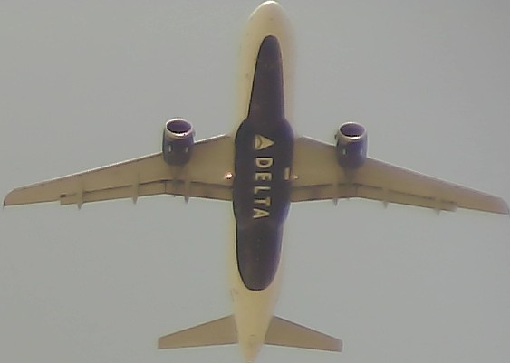
2025-06-05 13:30:25
Aircraft: a70bc9 | Type: CRJ 900 LR NG | Flight: JIA5295 | Altitude: 2375 feet | Speed: 128 knots | Vertical Speed: -832 feet/min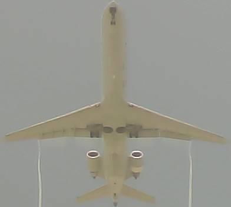
2025-06-06 14:45:12
Aircraft: a9ddb0 | Type: 777 323ER | Flight: AAL21 | Altitude: 2375 feet | Speed: 171 knots | Vertical Speed: -896 feet/min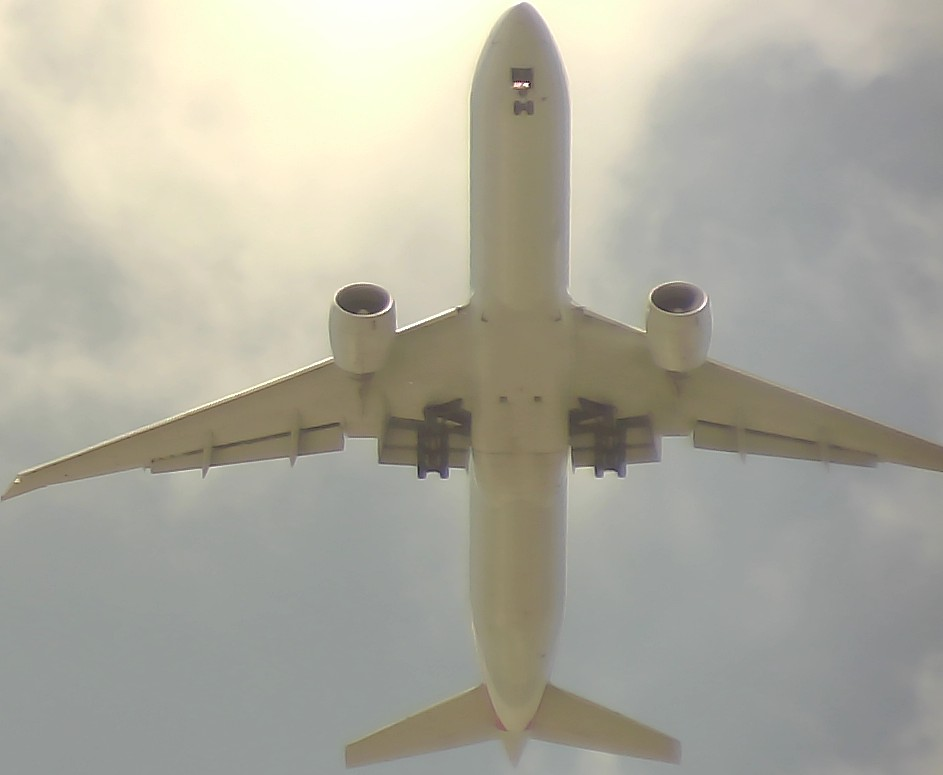
2025-06-09 12:06:14
Aircraft: adeca5 | Type: A321 231SL | Flight: AAL1312 | Altitude: 2900 feet | Speed: 216 knots | Vertical Speed: 1088 feet/min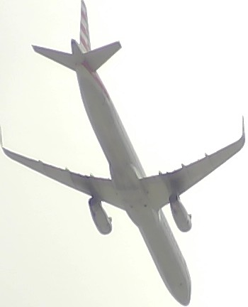
2025-06-16 09:58:03
Aircraft: 06a12a | Type: A350 1041 | Flight: QTR16C | Altitude: 2375 feet | Speed: 161 knots | Vertical Speed: -896 feet/min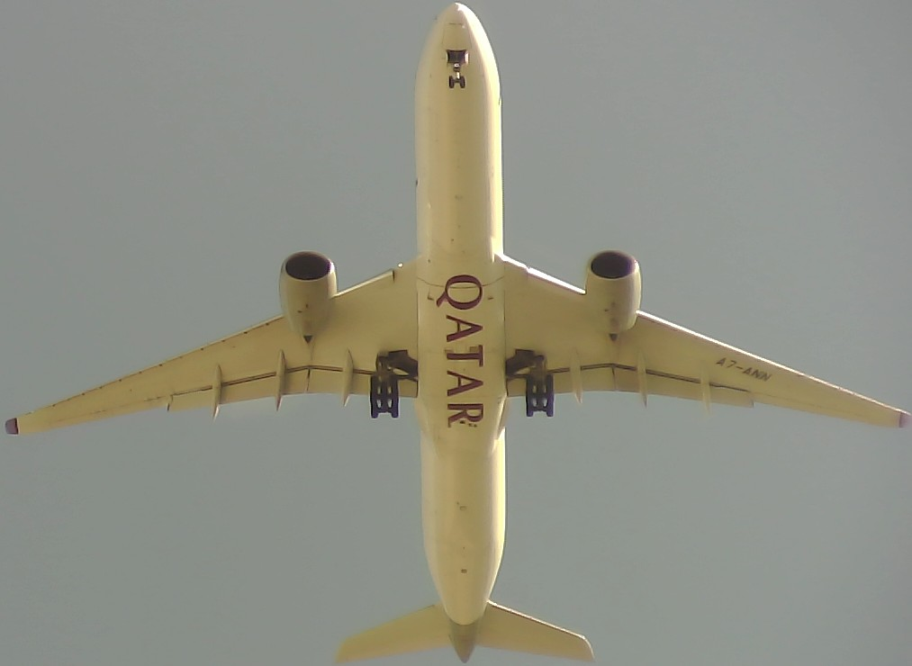
2025-06-16 10:45:45
Aircraft: 89644e | Type: 777 300ER | Flight: UAE221 | Altitude: 2350 feet | Speed: 183 knots | Vertical Speed: -1088 feet/min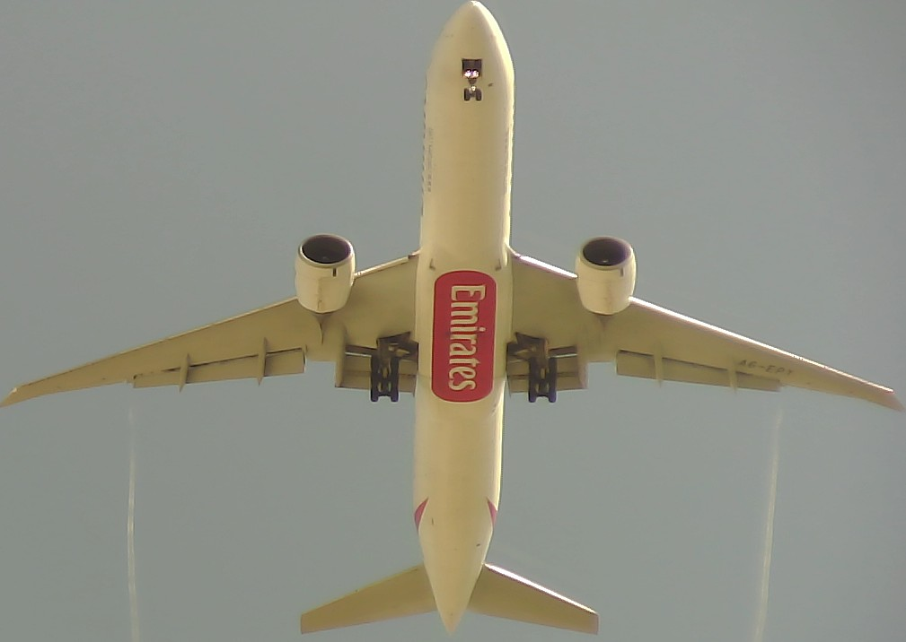
2025-06-16 12:03:38
Aircraft: 4bb18a | Type: 787 9 | Flight: THY89J | Altitude: 2325 feet | Speed: 181 knots | Vertical Speed: -1024 feet/min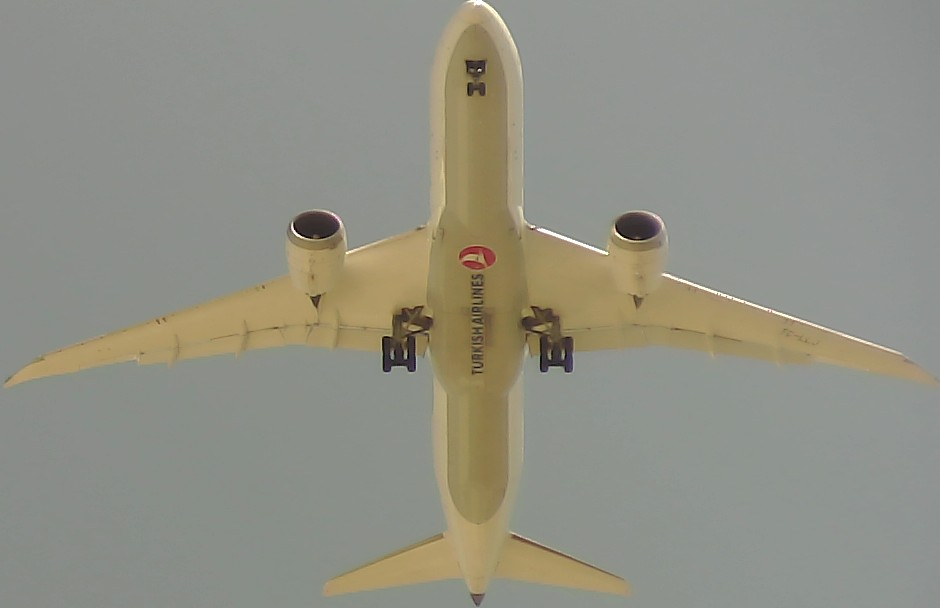
2025-06-16 12:17:55
Aircraft: ab905c | Type: 737NG 8K5/W | Flight: SCX508 | Altitude: 2350 feet | Speed: 183 knots | Vertical Speed: -960 feet/min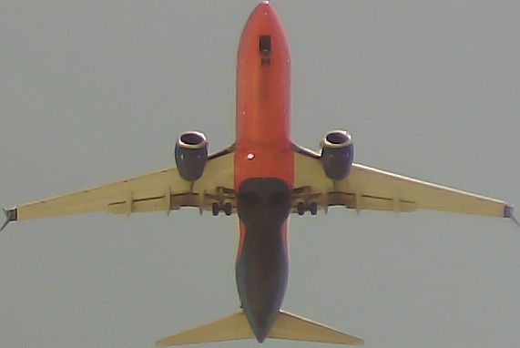
2025-07-10 13:59:06
Aircraft: 3c64ec | Type: A340 313X | Flight: DLH2K | Altitude: 2350 feet | Speed: 136 knots | Vertical Speed: -256 feet/min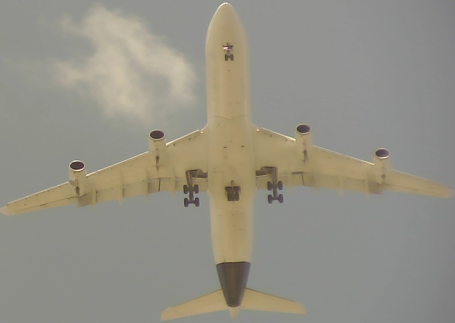
2025-07-28 15:40:11
Aircraft: a96ba2 | Type: A320 232 | Flight: JBU815 | Altitude: 2100 feet | Speed: 178 knots | Vertical Speed: -1280 feet/min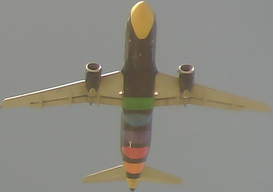
2025-08-16 17:25:42
Aircraft: 4d012c | Type: 747 467F | Flight: CLX21J | Altitude: 2300 feet | Speed: 174 knots | Vertical Speed: -896 feet/min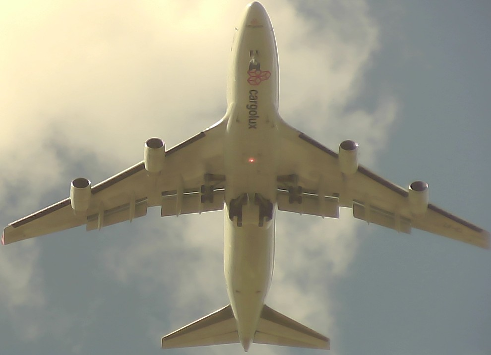
2025-09-15 06:52:49
Aircraft: ad84de | Type: 737NG 823/W | Flight: AAL1940 | Altitude: 2275 feet | Speed: 157 knots | Vertical Speed: -832 feet/min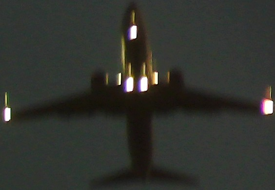